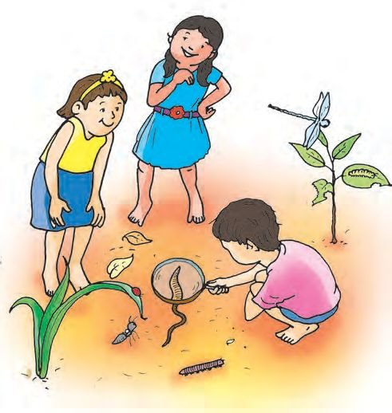
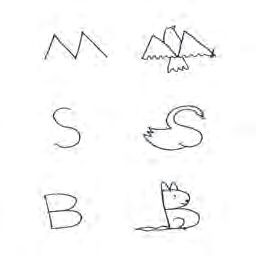
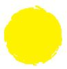

“Wow! All of you have come early today! Very good.’’
Seeing her friends Mithra came out of her house.
Children, you have seen the surroundings of Mithra’s house.
Which creatures are there in the picture?
Among these which creatures do Mithra raise?
Which creatures do humans raise as pets?
Find out more creatures in and around your home and write down
their names in your Environmental Science Diary.
How many creatures did you find?
How many did your friends find?
Tiny ones and giants
Mithra and friends are playing a game.They say the names of
creatures.
“Who will find the most number of creatures?” It became a contest.
“Grasshopper, firefly, chameleon, beetle, cow..”
They did not forget to draw the pictures of the creatures.
Did you see the pictures of the creatures that Mithra drew.
Shall we play the same game?
Present the sound or movement of a few creatures without naming
them. Let your friends identify the creature.
Create a table with the names of the creatures that you found.
Draw and colour them.
24
Page 25

Figure fig_ch01_p025_01 (Page 25)

Figure fig_ch01_p025_02 (Page 25)

Figure fig_ch01_p025_03 (Page 25)
Which is the smallest animal in
your list?
Let’s draw alphabet
figures.
The largest?
Arrange and write the names of
animals in your table based on
their size.
Have you noticed the tiny
creatures in your surroundings?
Haven’t you seen many tiny
creatures in your school
surroundings? Which are they?
Are they all of the same size?
Let us observe them together.
Please use the handlens for your
observation.
Try more pictures.
Where shall we observe?
l
l
l
In the soil
In plants
l
l
Write down the names of the tiny creatures that you found in your
Environmental Science Diary.
25
Finger drawings
Look at the pictures. They are
drawn by dipping fingers in ink and
imprinting the same on paper. Draw
more pictures like this.
Variety in features
Identify the animals by observing the body parts in the picture.
How do these animals differ?
l
l
l
Colour
Spots
Are there creatures which can be identified by observing their
colour?
Which are the creatures that you can identify by looking at their
horns?
How about spots?
Every creature is different in shape, size, colour, horns, nails,
spots, stripes, etc.
26
Sea creatures
We know that there are many kinds of fishes in the sea. Sea is the
habitat not only to fishes but also to many other creatures. There
are more creatures in the sea than on land. Which sea animals
do you know? Discuss with your friends and write them. See the
pictures of some of the sea creatures.
Sea cucumber
Sea horse
Sea hedgehog
Why did these creatures get such names?
Sea cow
Blue whale, the largest creature on
earth lives in the sea. They are not
from the family of fish. Blue whales
give birth to their offsprings.
Many ways of movement
The figures of which creatures are found in the picture?
Make them by folding papers.
Use these figures to show how they move.
Do all creatures move in the same way?
Categorise creatures based on their movement.
l
Is there any creature that moves in a different way?
Observe the movement of creatures like frogs, grasshoppers, etc.
Is there any connection between the body features and the
movements of the creatures?
Creatures
l
Body features
Four legs that bend
backwards
Movement
Walk
l Run
l
Observe the movement of a duck.
Are there creatures that move in more than one way? Find them out.
Write down about the movement of more creatures.
Discuss with friends and expand the above table.
Each creature has a movement based on the features of its
body and the environment that it lives.
28
Have you read the conversation between praying mantis and
butterfly ? What did they say? Find out the food of a few other
creatures and write them in the table given.
ST-435-3-EVS-(E)-3-Vol-1
Creature
Cow
Crow
Elephant
Squirrel
Hen
Eagle
Kingfisher
Frog
l
Food
Which among the creatures eat only the parts of the plant?
The creatures which eat only plant parts are called herbivores.
The creatures which eat only meat are called carnivores.
Omnivores are creatures that eat both plants and meat.
Colour the circles in the box according to the clues given
Carnivores
Omnivores
Herbivores
Complete the list by adding more names of animals.
Herbivores
Carnivores
Omnivores
• Cow
•
• Lion
•
• Crow
•
•
•
•
•
•
•
•
•
•
•
•
•
•
•
•
Is there any connection between the body features of creatures
and their food habits? What is your opinion? Write.
30
Observe the pictures. Which body parts of the creatures help them
to catch their prey and eat it? How?
l
l
l
l
Duck
-
Lion
-
Eagle
Frog
-
Carnivores use their sharp nails to
attack their prey. They use their
sharp, pointed teeth to bite and tear
their prey.
Carnivore birds can peck and eat
their prey with their strong and sharp
beaks. Strong legs and their sharp
bent claws help them in gathering
food.
The structure of the teeth of herbivores is suited
to chew plant parts.
Many forms, one life
Mithra was playing in the courtyard.
There were some light yellow pearly
objects in a plant. Mithra called her
mother. Mother looked at the leaves.
31
She waited eagerly to see the butterfly coming out of the egg.
“What a surprise!” She saw only worms.
“Mom, are they really not the eggs of the butterflies?”
“These worms will become butterflies dear. It is called larva”
Mithra became curious. She took photos of the changes happening
to the worm in the following days.
Observe the pictures. Find
out the names of each stage
and write its features in your
Environmental Science Diary.
Pupa
Larva
If you observe the bottom of the curry leaves and other plants,
you can find butterfly eggs sticking there.
Observe these butterflies. Aren’t the designs on the wings
the same? How about the butterfly that you coloured?
Do the wings of all butterflies look like this? Observe the
butterflies in your surroundings. Present your findings
to the class.
Each class of
butterfly is given
names to identify
them.
The largest butterfly in Keralam is Southern
birdwing (Garuda Shalabham) and the
smallest is Grass Jewel (Rathnaneeli). The
official butterfly of Keralam is
Malabar banded peacock (Buddha
Mayoori).
Grass jewel
The pictures of some butterflies found in our surroundings are
given below.
Tawny coster
Common pierrot
Blue tiger
Crimson rose
Lemon pansy
Common mormon
Observe the butterflies in your surroundings. Find their names
and write them.
Butterflies depend on plants in two ways; for laying
eggs and for food. The Common mormon butterfly
(Naarakakkali) usually lays eggs on the citrus plant
(naarakam) and the orangeberry plant (paanal). Their larvae
eat the leaves of these plants. When they become butterflies,
they find nectar from the flowers of hibiscus, white orchid
tree and morning breeze plants.
34
Grow plants like pagoda flower (krishnakireedam), rattleweed
(kilukki), curry leaf plant, citrus, oleander (arali) that attract
butterflies in your School’s Biodiversity Garden. Observe what
types of butterflies come to the garden.
How many varieties of creatures are around us!
Where do they live?
l
l
l
Forest
l
Pond
l
River
l
What will happen if they become extinct?
The earth belongs to everyone, doesn’t it?
What can we do to protect the surroundings where these creatures live?
l
l
Let us assess
1. Mithra observed the body features and food habits of the
domestic animals like cat and goat, and wrote them in the
table. Add more details in the table.
l
l
Eats meat
Cat
l
Has sharp nails on feet
l
l
l
l
l
l
Goat
Eats plant parts
Does not have sharp
nails on feet
l
l
l
l
l
2. Find the sea creatures hidden in the picture given. Write their
names.
3. In which category does the duck belong to according to its food
habits?
If the duck was a carnivore like the eagle, what body features
will it have? Draw and add them.
Extended activities
1. Are the butterflies around us of the same size and colour? Observe
the butterflies in your surroundings and find the similarities
and differences. Collect pictures and create a butterfly album.
2. Visit any one place like pond, field, forest or grassland near your
school. Write the names of various creatures you identified.
Prepare an observation note on any two of such creatures.